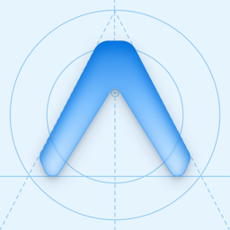

ZipWorm
Guide a hungry inchworm through the garden: eat every snack in number order and fill every tile.
Contact
Questions, bugs or ideas? Email zipworm.app@gmail.com. Please include your device model and iOS version if you're reporting a bug.
How to play
- Start on snack 1 and drag the worm from tile to tile, up, down, left or right.
- Eat the snacks in number order and cover every tile exactly once.
- Drag back, tap an earlier tile, or press Undo to rewind.
- In Letters mode the snacks are letters: eat them in the order that spells the hidden word.
ZipWorm Plus
ZipWorm is free, with unlimited Easy and Medium puzzles and 3 Hard or Letters puzzles a day. ZipWorm Plus is a one-time purchase that removes the daily limit. It isn't a subscription.
Restoring Plus: on a new or reinstalled device, open the Plus screen and tap Restore purchase while signed in with the same Apple Account you bought it with. Plus works with Family Sharing.
Refunds are handled by Apple: visit reportaproblem.apple.com.
Common questions
No sound? ZipWorm respects the ring/silent switch. Also check the music and sound buttons in the top-left of the home screen.
Is my progress backed up? Progress, streaks and best times are stored only on your device. Deleting the app resets them (Plus can be restored).